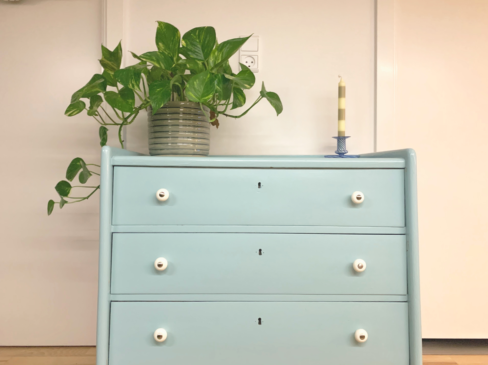

ISTANDSÆT DIT TRÆMØBEL
VEJLEDNING: TRIN FOR TRIN
Her får du en nem guide til, hvordan du maler dit gamle træmøbel, som trænger til
lidt kærlighed. Det trender for tiden med at gå den grønne vej møbelrenovere
genbrugsguld. Det er supernemt og bæredygtigt at upcycle sine egne møbler. Og
så er det i øvrigt ret billigt!
Det eneste, du skal købe, er farverig maling,
og møblet får et helt nyt udtryk. Du kan nemlig sagtens selv lave dit helt eget
unikke møbel. Følg guiden her for at komme sikkert igennem processen. Nyd det!
INDEN DU GÅR I GANG
Der er en smule forberedelse inden du kan gå i gang med at svinge penslen.
Sørg for at du har plads til at arbejde og der må blive beskidt af træstøv og
maling. Ud i det fri eller i værkstedet, hvor der må svines og arbejdes.
DET DU SKAL BRUGE
- Sandpapir (Gerne korn 120)
- En klud
- En god pensel
- Maling i den ønskede farve
TIP
Vælg hellere kvalitetsmalingen, som er tykkere end budget-malingen.
Det gør malerarbejdet nemmere og malingen vil ikke løbe og sætte dråber af
maling på møblet.
SÅDAN GØR DU
1. SLIB
Træoverflader skal slibes for at malingen hænger bedre ved.
Slib langs med træets årer, som giver et finere udtryk.
Hvis der er maling på møblet i forvejen, skal du blot slibe henover.
2. RENGØR
Rengør dit møbel for alt det træstøv, du nu har slebet, så det ikke bliver blandet med malingen.
Brug en klud og varmt vand.
3. MAL
Nu er det tid til den sjove del. Mal første lag på møblet i den ønskede farve
maling. Bruger du udelukkende pensel kan man se de fine penselstrøg på møblet.
Prøv igen at følge træets årer ligesom med sandpapiret. Det er helt op til dig,
hvilket udtryk møblet skal have. Lad malingen tørre før du maler henover med andet
lag.
4. TILFØJ DETALJER
Sidste step er til detaljerne, som er prikken over i’et før dit møbel er helt
færdigt. Mangler kommoden greb, . Mangler møbet intet er kan du nu nyde, at du
har skabt dit eget helt unikke upcyclet møblet.